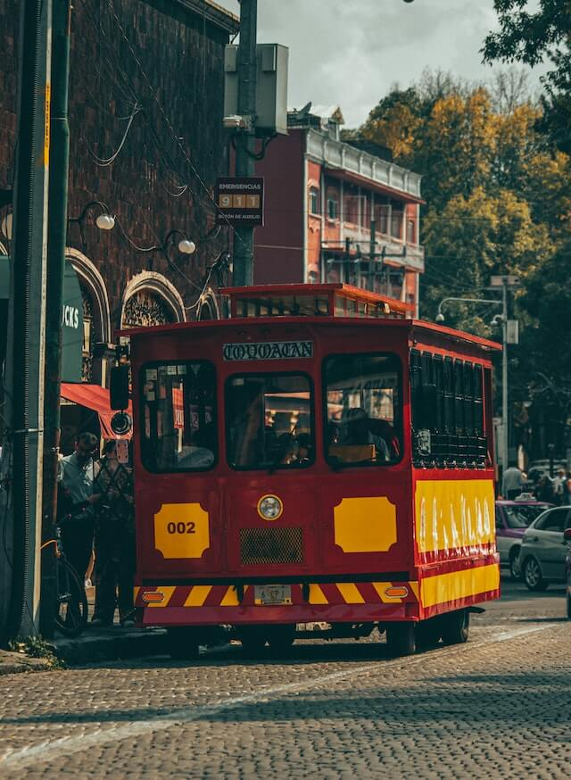

Prueba text
- Centro histórico
- Barrio de Chimalistac
- Coyoacán
- Xochimilco
Tiempo estimado de recorrido 8-10 hrs.
La Ciudad de México, es uno de los destinos más ricos y fascinantes del mundo, no solo por ser una de las tres principales ciudades con el mayor número de museos, también conjuga un legado histórico, lleno de sabor gracias a su variada oferta gastronómica, reconocida por los amantes de la comida, local, tradicional y de gran fusión internacional.
Este ciurcuito tiene como finalidad que conozcas lo más representativo de nuestra ciudad, y para ello tenemos los siguientes tours:
Tiempo estimado de recorrido 8-10 hrs.

Tiempo estimado de recorrido 8-10 hrs.

Tiempo estimado de recorrido 8-10 hrs.
Tiempo estimado de recorrido 8-10 hrs.
Ahora si lo tuyo es conocer un sitio más a fondo, caminando conocemos más.
En este circuito conoceremos como fue creada la gran Ciudad de México, desde su origen como México-Tenochtitlan, hasta como la conocemos actualmente como nuestro Centro Histórico de la CDMX. (Recorrido a pie por Templo Mayor, Catedral, Palacio Nacional, calle de Tacuba, Palacio de Bellas Artes, Alameda Central y la calle de Madero)
Tiempo estimado de recorrido 4 hrs.